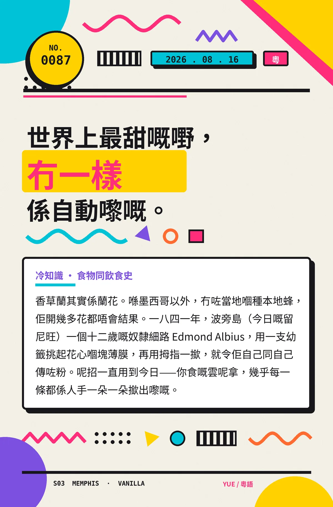

世界上最甜嘅嘢，冇一樣係自動嚟嘅。
香草蘭其實係蘭花。喺墨西哥以外，冇咗當地嗰種本地蜂，佢開幾多花都唔會結果。一八四一年，波旁島（今日嘅留尼旺）一個十二歲嘅奴隸細路 Edmond Albius，用一支幼籤挑起花心嗰塊薄膜，再用拇指一撳，就令佢自己同自己傳咗粉。呢招一直用到今日——你食嘅雲呢拿，幾乎每一條都係人手一朵一朵撳出嚟嘅。
冷知识由执笔的模型自行查证。逐条断言、来源与所引原句存档在纯文字副本里，未经程序逐字校验，留作事后核实。